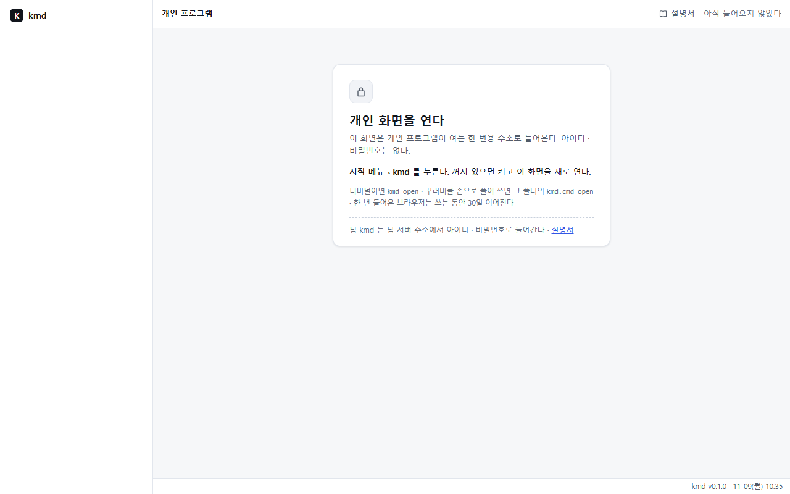
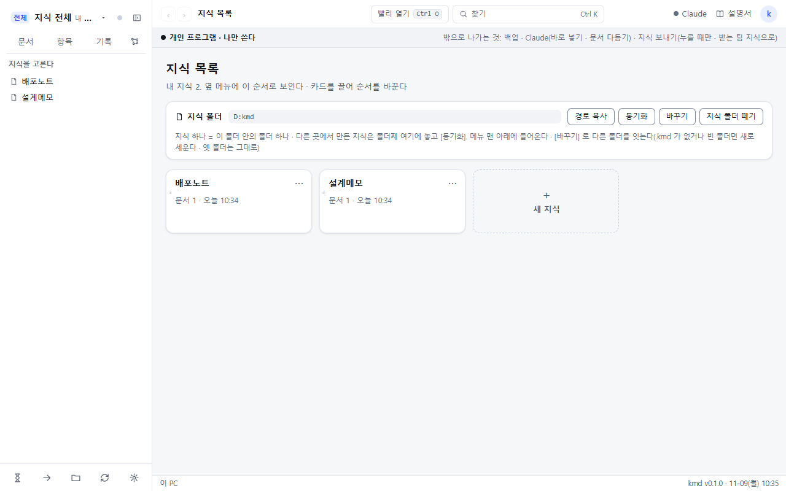
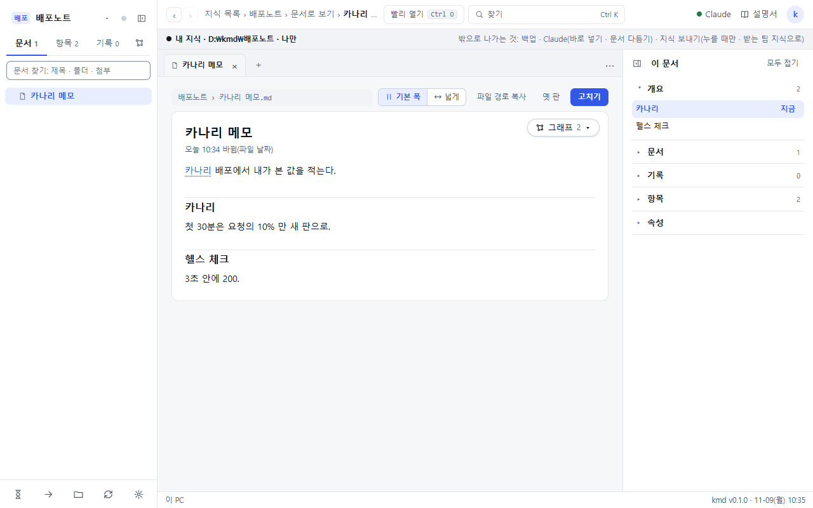
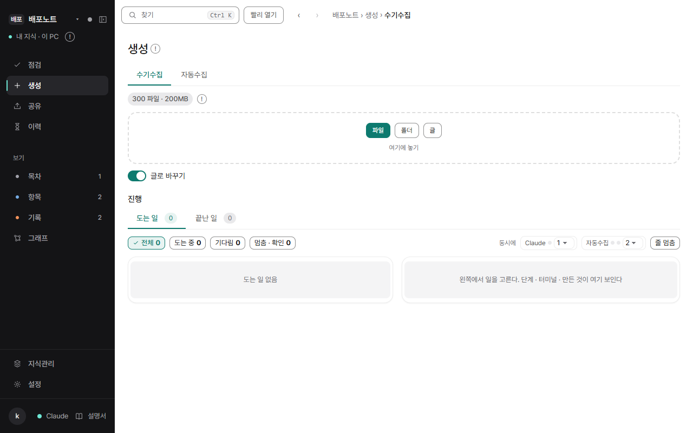
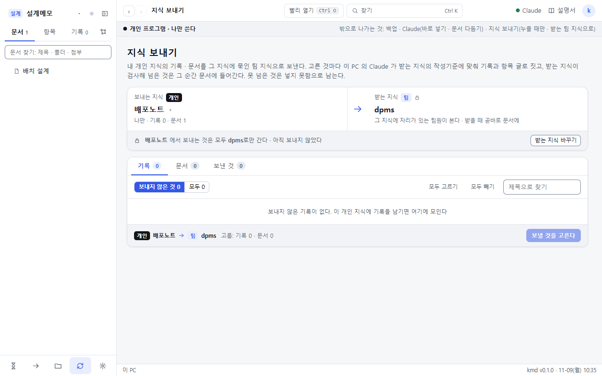
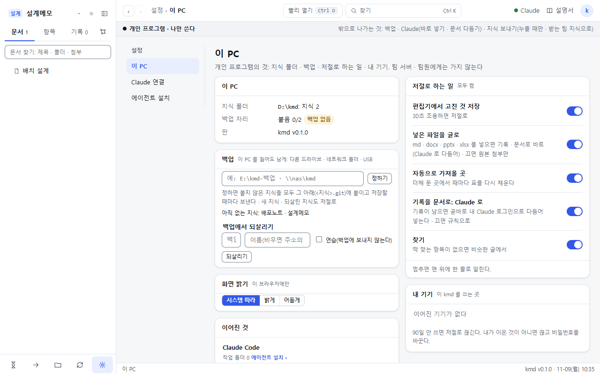
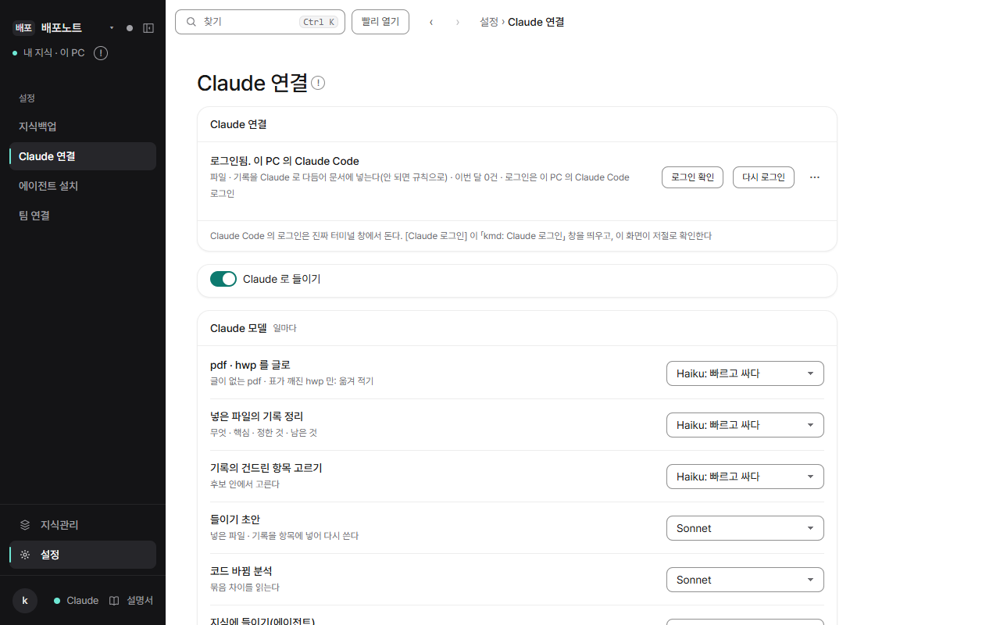
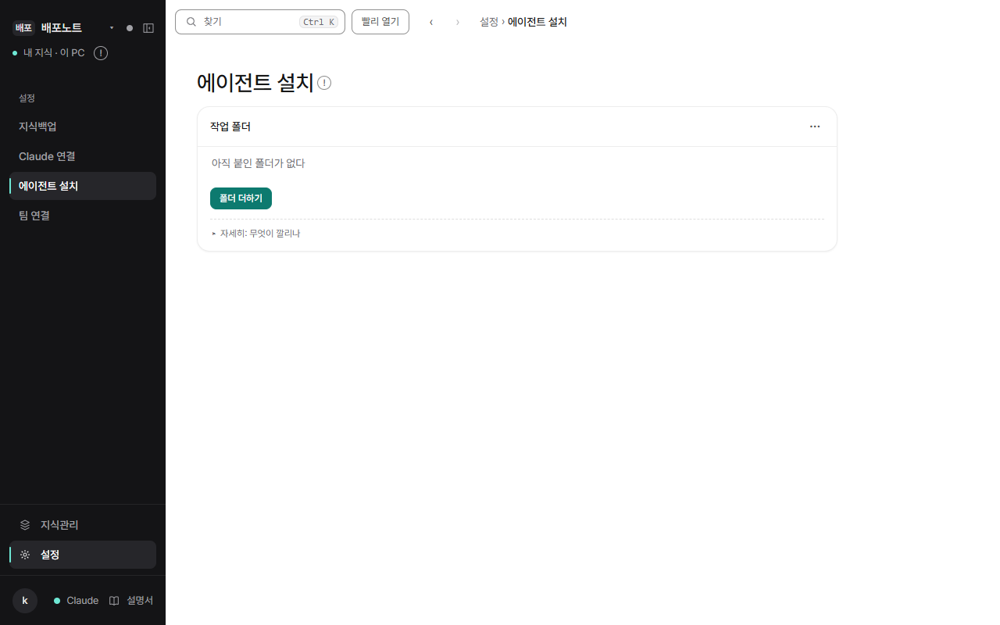
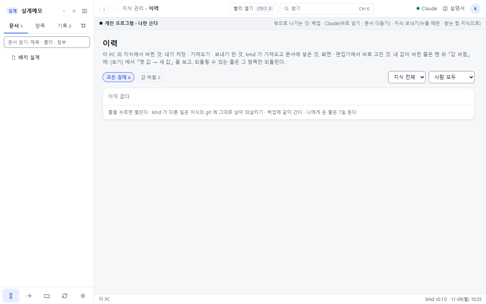
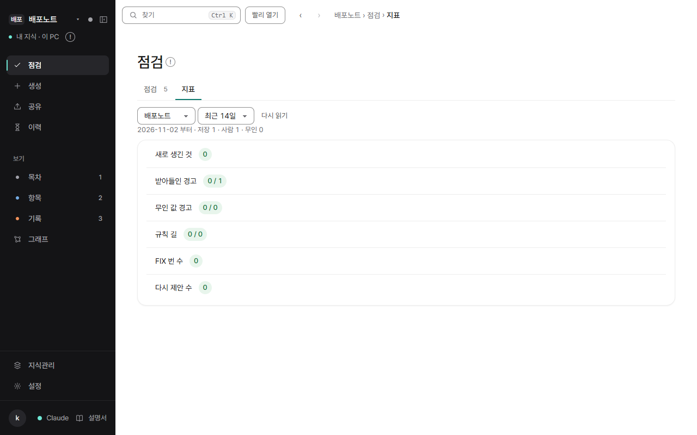

개인 프로그램
내 PC 에서 도는 kmd 다. 내 개인 지식(기본 D:\kmd)만 다루고, 팀 서버 · 팀원 · 관리자 어디에도 가지 않는다. 팀으로 가는 것은 공유로 고른 기록 · 문서뿐이다.
1설치 · 업데이트 · 팀에 잇기
팀 지식만 쓰면 개인 프로그램은 필요 없다: 팀 화면 › 설정 › 에이전트 설치의 한 줄로 작업 폴더의 Claude Code 에 팀 지식을 붙이고, 폴더째 많은 파일도 그 Claude Code 에서 넣는다(대량 넣기 kmd-team-import). 개인 지식을 쓰려면 이 프로그램을 깐다.
까는 길도, 새 판으로 올리는 길도 한 줄이다. 팀 화면 › 설정 › 개인 프로그램 설치 › [한 줄 복사] → PowerShell 에 붙여 넣는다(10분 안에 한 번).

묻는 것 없이 끝나고 ✓ 넷이 찍힌다.
✓ 세웠다: 이 PC 의 내 지식 자리(D:\kmd)와 지식백업
✓ 팀에 이었다: 내 이름으로
✓ Claude Code 에 이었다: 새로 여는 것부터
✓ 늘 켜기: PC 를 켜면 저절로 켜고, 멈추면 다시 켠다- kmd 가 없으면 팀 서버에서 PC 꾸러미를 받아
%USERPROFILE%\.kmd-app에 깔고 사용자 PATH 에kmd를 더한다(관리자 권한 없이). - 깔려 있는데 팀 서버의 판보다 옛 판이면 그 판으로 올린다. 새 판을 한 번 켜 보고 바꾸며, 안 켜지면 앞 판 그대로다. 같거나 더 새 판이면 올리지 않는다.
- 팀에 잇기는 이 PC 에 내 이름의 기기 열쇠를 만들어 Windows 자격 저장소에 둔다. 이 열쇠로 Claude Code 가 팀 지식을 읽고, 공유가 팀으로 보낸다. 열쇠는 내 자리대로만 본다.
- 내 기기: 팀에 이은 PC 목록과 [끊기]. 잃어버린 PC 는 여기서 끊는다. 같은 PC 에서 다시 이어 남은 열쇠는 「옛 열쇠 n」 에 접혀 있고 [모두 끊기] 로 지운다(그 PC 는 그대로 쓴다).
- 새 판: 이은 팀 서버에 더 새 판이 있으면 잉크 기둥 「⚠ 경고 n」 에 「팀 서버에 새 판이 있다」 가 선다. 팀 화면 › 설정 › 개인 프로그램 설치의 한 줄을 다시 붙여 넣으면 새 판으로 바뀐다(지식 · 설정은 그대로).
저장 승인
개인 지식은 새 지식 · 옛 판에서 쓰던 지식 모두 처음부터 승인 저장이다. 새 판으로 올려도 따로 옮기는 일은 없다. 저장 승인 전 기록은 「기록」 으로만 보인다(읽기만).
2개인 화면 열기
개인 화면에는 아이디 · 비밀번호가 없다. 개인 프로그램이 여는 한 번용 주소로만 들어온다.
- 시작 메뉴 › kmd 를 누른다. 꺼져 있으면 켜고 개인 화면을 연다. 터미널이면
kmd open. - 한 번 들어온 브라우저는 쓰는 동안 이어진다(마지막으로 쓴 날부터 30일).
- 주소창에
127.0.0.1:7373만 치거나 지난 주소를 열면 아래 안내가 선다.

3개인 화면

1234- 지식 폴더 줄: 경로 · [복사] · [동기화] · [바꾸기](다른 폴더를 잇는다) · [떼기](폴더 이름을 보이고 확인한 뒤 뗀다 · 파일은 지우지 않는다).
- 모든 지식: 내가 만든 지식. 끌어서 순서, ⋯ 에서 메뉴에서 빼기.
- + 새 지식: 이름 · 저장소(접힘: 있는 주소 + 「가지 main ▸」 또는 나중에). 저장소는 지식 상세 › 저장소에서 붙이고 · 바꾸고 · 뗀다.
- 잉크 기둥: 지식 고르기 · 자리 줄 「내 지식 · 이 PC」 아래 지식 메뉴 점검 · 생성 · 공유 · 이력(고른 지식에서 하는 일 · 점검은 탭 점검 · 지표) · 목록 칸 문서 나무 머리 연필 아이콘이 구조 · 아래쪽 공통 메뉴 지식관리 · 설정 · 바닥 나 · Claude · 설명서(지식관리: 모든 지식 · 기초 세우기 / 설정: 지식백업 · Claude 연결 · 에이전트 설치 · 팀 연결).
보는 법 · 찾기 · 고치기는 팀 화면과 같다(쓰는 사람 설명서). 다른 점은 셋이다.
- 기록과 문서가 한 번에 들어간다. 개인 지식은 늘 승인 저장이다. 사람이 남기는 것(화면 고치기 · 기록 쓰기 · 세션)은 저장 제안을 보고 승인하면 기록과 항목 글이 한 번에 들어가고, 파일 넣기 · 자동수집은 늘 들어간다(4절). 저장 승인 전 기록은 「기록」 으로만 보인다(읽기만).
- 화면에서 고치면 저장 확인 창이 뜬다. 팀 화면과 같은 창이다(쓰는 사람 설명서 · 저장 확인): 항목마다 바뀐 줄 · 경고 · 오류 · [넣기](경고를 받아들임).
- 편집기로 md 를 직접 고쳐도 된다. 30초 조용하면 저절로 들어가고, 꺼져 있던 동안 고친 것은 켤 때 거둔다. 기록(
work/) · 항목 장부는 고치지 않는다(kmd 가 되돌리고 사본을 남긴다).

4생성: 수기수집(파일 넣기) · 자동수집

파일을 끌어다 놓으면 kmd 가 파일마다 Claude Code 를 띄워 세션처럼 넣는다(들이기). 기록(원문 · 원본 첨부)과 문서가 한 커밋으로 들어간다. 사람이 승인하는 길이 아니라 늘 들어간다. 도는 일의 단계 이름은 수집 › 검토 › 짓기(기록 쓰기) › 넣기(항목에 넣기)다.
- Claude Code 가 쓸 수 있는 것은 넣은 파일을 읽는 것과 그 지식의 kmd 도구뿐이다(셸 · 웹 · 다른 지식 없음).
- 한 번에 300 파일 · 200MB 까지. 파일마다 Claude Code 가 넣고, 「Claude 로 들이기」 를 껐거나 로그인이 없거나 한도이거나 Claude Code 가 넣지 않았으면 규칙 길(Claude 없이 원문 그대로 갈래 문서의 새 항목 · 맞는 갈래가 없으면 「들인 자료」)로 넣는다(까닭은 도는 일 터미널에). 값 대조 경고는 막지 않고 기록 끝 「값 대조」 로 잰다. 결과는 진행 › 끝난 일에 들어간 곳 · 「규칙 길」 칩으로 보이고, 이력 갈래는 「들이기」 다. 일마다 쓰는 모델은 설정 › Claude 연결.
- 개인 지식이 하나도 없을 때 파일을 넣으면 [+ 새 지식] 창이 열린다(받은편지함을 저절로 세우지 않는다).
- 폴더째 새 지식은 지식관리 › 기초 세우기: 빈 지식 → 재료 폴더 경로 → 거르기(옛 판 · 같은 글은 빼기 · 비밀 의심은 보류) → 구조안(Claude 안 · 폴더 그대로 · Claude 안은 이 PC 의 Claude 세션이 재료를 읽으며 짓고, 오른쪽 칸 동작 내역에 읽는 파일 · 생각 · 답 · 검사가 줄로 보인다) → 짓기(처음 3 문서는 읽고 승인) → 진단(연습 판) → 넣기. [넣기] 전에는 지식이 바뀌지 않고, 화면을 닫아도 만들던 것에서 [이어 하기]. 300 파일 · 200MB 를 넘으면 Claude Code 의 kmd-seed 스킬로 꾸러미를 만들어 그 폴더 경로를 넣는다.
- 자동수집: 문서 폴더 · 소스 코드(git 주소 또는 저장소 폴더) · DB(읽기 전용). 정한 때마다 바뀐 것만 들어온다.
5공유(개인 → 팀)

1234- 보내는 지식(개인): 잉크 기둥에서 고른 지식.
- 받을 곳(팀). 개인 지식마다 하나로 묶인다. 처음 한 번 [받을 곳 정하기] 로 정한다. 팀에 잇지 않았으면 「팀 연결 없음」 + [잇기].
- 바꾸기: 고를 수 있는 팀 지식은 내가 쓰기 자리 이상인 것만. 바꿀 때는 새 이름을 그대로 쳐야 바뀐다.
- 보내기: 탭에서 기록 · 문서를 고르면 [「받을 곳」 으로 n개 보내기] 로 바뀐다. 보낸 것은 이력 갈래 「보내기」 에 남는다.
- 탭: 기록(보내지 않은 것 먼저) · 문서(늘 통째로 · 「보낸 적 없음」 · 「보낸 뒤 고침」) · 보낸 것.
- 단추와 확인 창에 받는 지식 이름이 늘 들어간다(예: [DPMS 지식으로 2개 보내기]).
- 고른 것마다 이 PC 의 Claude(내 Claude 로그인)가 받는 팀 지식의 문서를 읽고 그 지식의 작성기준에 맞춰 기록과 항목 글을 짓는다.
- 팀 지식: 확인 창이 곧 받는 팀의 저장 제안이다. 창을 열면 고른 글마다 내 Claude 가 짓고 팀이 넣을 곳 · 고침 · 경고를 보인다(한 번에 글 10개까지). 넣을 곳마다 [빼기] 로 뺄 수 있고, [보내기] 가 팀 쪽 승인이다(내 개인 지식의 승인과 따로다). 뺀 것은 보내지 않고 남는다(모두 뺀 글은 「뺌 n」). 들어가거나, 그사이 팀 지식이 바뀌었으면 위 줄에서 [버리기] 하고 다시 골라 새 제안을 본다. 옛 판 개인 프로그램은 「새 판으로 올린다」 를 받는다.
- 보낸 뒤 알림 · 보낸 것 탭에 「넣음 n」 이 보인다. 같은 것을 다시 보내면 「이미 넣음」 이고 팀에는 아무것도 쓰지 않는다.
- 받는 팀 지식이 「Claude 에 보내지 않음」 이거나 내 Claude 로그인이 없으면 Claude 를 부르지 않는다.
- 보내는 일은 이 PC 의 기기 열쇠로 한다. 팀 서버에 닿지 않으면 저절로 다시 보낸다. 팀이 「저장이 너무 잦다」 고 하면 알려 준 시간만큼 쉬고 이어 보낸다. 팀 화면에는 보내기 메뉴가 없다.
6설정

Claude 로그인

- [Claude 로그인] 을 누른다작업 표시줄에 「kmd: Claude 로그인」 창(
claude auth login)이 뜨고 브라우저를 연다. - 브라우저에서 Claude 에 들어간다이 화면이 몇 초마다 저절로 확인해 「로그인됨」 으로 바뀐다([지금 확인] 도 있다).
- 모델을 고른다일마다(pdf · hwp 를 글로 · 넣은 파일의 기록 정리 · 기록의 건드린 항목 고르기 · 들이기 초안 · 코드 바뀜 분석 · 지식에 들이기(에이전트)) Haiku · Sonnet · Opus.
[로그인 확인] 은 아주 작은 부르기 한 번으로 로그인이 살아 있는지 본다. 로그인이 끝났거나 한도에 닿으면 그동안 들이기는 규칙 길로 문서에 들어간다(멈춤 줄 「들이기(내 Claude)가 쉬고 있다」). 개인 지식은 내 Claude 로그인으로만 Claude 에 간다.
Claude 로 들이기(같은 화면의 스위치): 켜면 파일 넣기 · 자동수집을 내 Claude 가 지어 넣고, 끄면 Claude 를 부르지 않고 늘 규칙 길(원문 그대로 · 갈래 문서의 새 항목이나 「들인 자료」 폴더)로 넣는다.
에이전트 설치(개인 지식)

[폴더 더하기] 또는 kmd agent add '<개인 지식>' --dir <폴더>. 그 폴더에 스킬 kmd-work · kmd-save · kmd-build, 연결 kmd(이 PC), CLAUDE.md 「이 폴더의 개인 지식」 표를 둔다. 팀 연결 · 팀 덩이는 건드리지 않는다.
| 팀 지식 | 개인 지식 | |
|---|---|---|
| 붙이는 곳 | 팀 화면 › 설정 › 에이전트 설치 | 개인 화면 › 설정 › 에이전트 설치 · kmd agent add |
| 스킬 | kmd-team-work · kmd-team-save | kmd-work · kmd-save · kmd-build |
| 연결 | kmd-team(팀 서버) | kmd(이 PC) |
| 남기면 보는 사람 | 그 팀 지식을 보는 팀 사람 | 나만 |
한 폴더에 둘 다 붙어 있고 「남겨」 만 말하면 세션이 팀인지 개인인지부터 묻는다. 「팀 지식에 남겨」 · 「내 지식에 남겨」 처럼 말하면 바로 그쪽으로.
세션에서 남기기: 저장 제안 → 대화로 고침 → 승인
「내 지식에 남겨」 하면 kmd-save 가 팀 지식과 같은 흐름으로 남긴다(쓰는 사람 설명서). 제안서 머리에 「보는 사람: 나만」 이 붙는 것만 다르다.
- 긴 작업은 정한 것 · 바뀐 것을 묶음으로 보이고 남길 묶음을 고르게 한다. 정해지지 않은 것은 남기지 않는다(이슈를 받는 갈래가 있으면 「이슈로 제기」).
- 【저장 제안】을 그대로 보이고, 「이건 빼고」 · 「값은 60」 처럼 말로 고치면 다시 제안받아 바뀐 줄만 보인다. 「넣어」 하면 기록과 항목 글이 한 번에 들어간다(경고는 받아들인 것으로 남는다).
- 메모(기록만 남기기)는 없다. 왜 그렇게 했나만 있는 기록은 글을 바꾸지 않고 그 항목에 이어지고(「글 그대로」), 이을 항목이 없으면 「기록 모음」 의 그 달 항목에 이어진다.
- 스킬 글이 새 판으로 바뀌면(지금 판은 세션 brief 의 kit 에 보인다 · 이 판에서 5) 설정 › 에이전트 설치에서 그 폴더를 다시 설치하고 Claude Code 를 새로 연다. 옛 판 스킬의 저장도 막지 않는다.
7이력 · 값 바뀜

값이 바뀌면(예: 10% → 20%) 이력 맨 위 「값 바뀜」 에 노란 줄로 알린다. 줄마다 비교하고 되돌린다. 나에게 온 줄은 7일 둔다. 갈래에 「들이기」(파일 넣기 · 자동수집)가 있다.
7-1점검 · 지표
잉크 기둥 지식 메뉴의 점검(고른 개인 지식). 탭은 점검 · 지표이고 메뉴에 배지가 없다(할 일 목록이 아니다).

- 점검: 항목 없음 · 장부 밖 · 잃은 항목 · 장부에 없는 항목 · 별칭 겹침 · 깨진 머리 · 깨진 링크가 줄로 선다(누르면 그 자리). 지식 홈에도 점검 카드가 있다.
- 지표: 이 PC 의 저장이 어떻게 들어갔는지 기간(최근 7 · 14 · 30 · 90일)으로 센 줄 여섯: 새로 생긴 것 · 받아들인 경고 · 무인 값 경고(파일 넣기 · 자동수집에서 값 대조가 걸린 것) · 규칙 길 · FIX 번 수(꼴을 고치려 다시 지은 번 수) · 다시 제안 수. 무인 값 경고 20% · 규칙 길 10% 를 넘으면 칩이 노랗다. [보기] 로 그 기록을 열어 고칠 것은 되돌리기 · 기록 고치기로 한다. 뜻은 지식관리자 설명서와 같다.
8이 PC 의 명령
| 명령 | 하는 것 |
|---|---|
kmd open | 개인 화면을 연다(꺼져 있으면 켠다). 시작 메뉴의 kmd 와 같다 |
kmd up [폴더] [--port 7373] [--no-open] | 개인 프로그램을 켠다 |
kmd pc task | 로그온 때 켜고 멈추면 다시(작업 스케줄러) · 시작 메뉴의 kmd |
kmd pc restart | 도는 개인 프로그램을 멈추고 다시 켠다 |
kmd pc update <새 판 폴더> <판> | 손으로 새 판 올리기(보통은 설치 한 줄) |
kmd agent add <개인 지식> [--dir 폴더] | 작업 폴더의 Claude Code 에 개인 지식을 더한다 |
kmd backup · kmd restore <저장소 주소> | 백업 상태 · 불러오기(운영) |